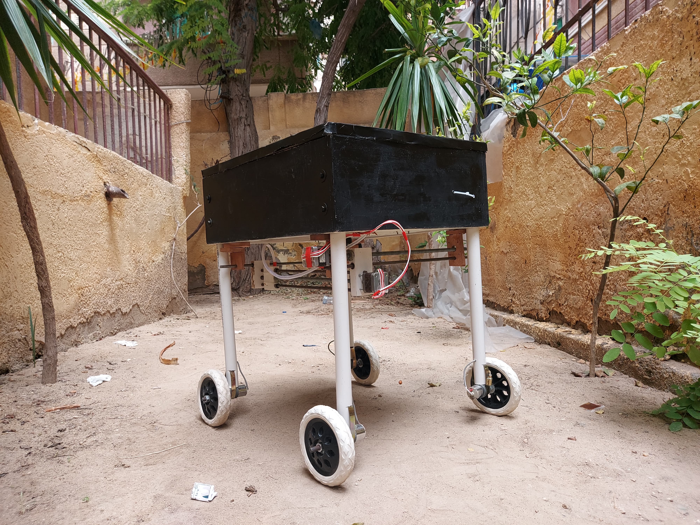
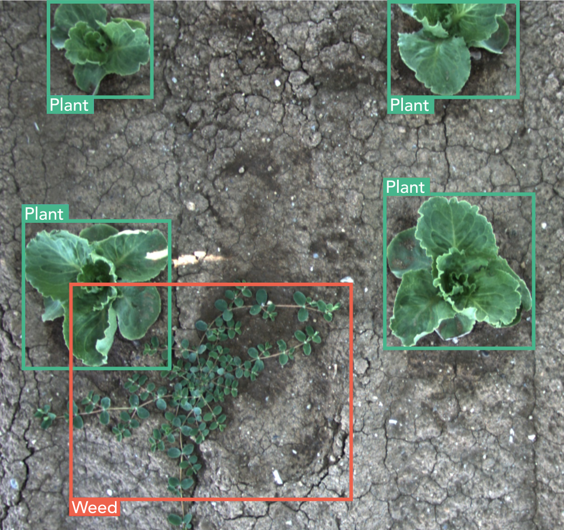

Smart, Self-Driving vehicle equipped with advanced technologies to revolutionize crop management.
By leveraging artificial intelligence (AI), computer vision, and precision application systems, our solution optimizes weed control, nutrient distribution, and crop monitoring, leading to enhanced productivity, reduced chemical usage, and improved sustainability.
Technology

An automated system designed to identify and spray weeds using an unmanned vehicle equipped with a camera and spraying mechanism. This system aims to enhance precision agriculture by specifically targeting weeds, thereby reducing herbicide usage and promoting efficient weed management.